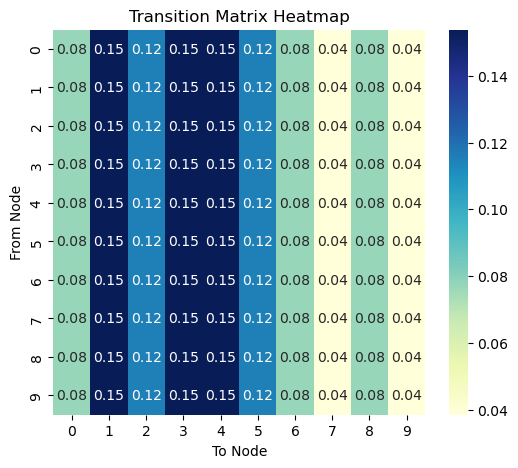

Random Walks Concepts
1 What is a random walk?
Suppose you walk in a city. You are drunk and your feet have no idea where to go. You just take a step wherever your feet take you. At every intersection, you make a random decision and take a step. This is the core idea of a random walk.
While your feet are taking you to a random street, after making many steps and looking back, you will realize that you have been to certain places more frequently than others. If you were to map the frequency of your visits to each street, you will end up with a distribution that tells you about salient structure of the street network.
Random walks appear everywhere in daily life:
- Netflix browsing: You click on a movie, then another recommended movie, then another… Your viewing pattern follows a random walk through the recommendation network!
- Wikipedia surfing: Starting from “Coffee”, you click links to “Brazil” → “Soccer” → “Mathematics” → “Physics”… Each click is a step in a random walk through knowledge.
- Stock market movements: Daily price changes can be modeled as random walks, where each day’s price depends on the previous day plus some random fluctuation.
2 Introduction through Games: Ladder Lottery
To make random walk concepts tangible, let’s start with a fun game that perfectly illustrates random walk principles:
Ladder Lottery
Ladder Lottery is a fun East Asian game, also known as “鬼腳圖” (Guijiaotu) in Chinese, “阿弥陀籤” (Amida-kuzi) in Japanese, “사다리타기” (Sadaritagi) in Korean, and “Ladder Lottery” in English. The game is played as follows: 1. A player is given a board with a set of vertical lines. 2. The player chooses a line and starts to move along the line 3. When hitting a horizontal line, the player must move along the horizontal line and then continue to move along the next vertical line. 4. The player wins if the player can hit a marked line at the bottom of the board. 5. You cannot see the horizontal lines in advance!
Play the Ladder Lottery Game! üéÆ‚ú® and try to answer the following questions:
- Is there a strategy to maximize the probability of winning?
- How does the probability of winning change as the number of horizontal lines increases?

The Ladder Lottery game is actually a perfect introduction to random walks! In this game, states are the vertical lines, transitions happen when you encounter horizontal connections, randomness comes from not knowing where the horizontal lines are placed, and long-term behavior determines your probability of winning. This simple game illustrates many key concepts we’ll explore in random walks on networks.
A random walk in undirected networks follows this process: 1. Start at a node i 2. Randomly choose an edge to traverse to a neighbor node j 3. Repeat step 2 until you have taken T steps
In directed networks, a random walker can only move along the edge direction, and it can be that the random walker is stuck in a so-called “dead end” that does not have any outgoing edges.

When studying random walks, we want to understand several key aspects: short-term behavior (where does the walker go in the first few steps?), long-term behavior (after many steps, where does the walker spend most of its time?), structural insights (what does the walker’s behavior tell us about the network?), and applications (how can we use random walks for centrality and community detection?).
Interactive Exploration
Play with the Random Walk Simulator! üéÆ‚ú® and try to answer the following questions:
- When the random walker makes many steps, where does it tend to visit most frequently?
- When the walker makes only a few steps, where does it tend to visit?
- Does the behavior of the walker inform us about centrality of the nodes?
- Does the behavior of the walker inform us about communities in the network?
Pen and Paper Exercises
Before diving into the mathematical details and coding, it’s important to work through some fundamental concepts by hand.
These exercises will help you: - Understand the basic mechanics of random walks - Calculate transition probabilities manually - Explore simple examples of stationary distributions - Connect random walk concepts to network properties
Mathematical Foundation: Transition Probabilities
A random walk is characterized by the transition probabilities between nodes. The transition probability from node i to node j is:
P_{ij} = \frac{A_{ij}}{k_i}
where A_{ij} is the adjacency matrix element and k_i is the degree of node i.
Example: A Larger Network
Let’s see how this works with a more complex example. Consider a network with 10 nodes:
Key observations: - Network structure: More complex with varying node degrees - Adjacency Matrix: Sparse matrix showing connection patterns - Degrees: Nodes have different connectivity (ranging from isolated to highly connected) - Transition Matrix: Probabilities depend on local node degree - Real insight: High-degree nodes have lower individual transition probabilities to each neighbor
Let us consider the following graph.
The transition matrix is given by:
We can represent all transition probabilities in a transition probability matrix \mathbf{P}:
\mathbf{P} = \begin{pmatrix} p_{11} & p_{12} & \cdots & p_{1N} \\ p_{21} & p_{22} & \cdots & p_{2N} \\ \vdots & \vdots & \ddots & \vdots \\ p_{N1} & p_{N2} & \cdots & p_{NN} \end{pmatrix}
This matrix \mathbf{P} encapsulates the entire random walk process. We can use it to calculate the probability of visiting each node after any number of steps:
- After one step: P_{ij} = p_{ij}
- After two steps: \left(\mathbf{P}^{2}\right)_{ij} = \sum_{k} P_{ik} P_{kj}
- After T steps: \left(\mathbf{P}^{T}\right)_{ij}
Let’s compute \mathbf{P}^2 for our larger network to see what happens after 2 steps:

This is after 10 steps.

This is after 1000 steps.

Let’s explore why \mathbf{P}^2 represents the transition probabilities after two steps.
First, recall that \mathbf{P}_{ij} is the probability of moving from node i to node j in one step. Now, consider a two-step walk from i to j. We can express this as:
(\mathbf{P}^2)_{ij} = \sum_k \mathbf{P}_{ik} \mathbf{P}_{kj}
This equation encapsulates a key idea: to go from i to j in two steps, we must pass through some intermediate node k. Let’s break this down step by step:
- The probability of the first step (i to k) is \mathbf{P}_{ik}.
- The probability of the second step (k to j) is \mathbf{P}_{kj}.
- The probability of this specific path (i → k → j) is the product \mathbf{P}_{ik} \mathbf{P}_{kj}.
- We sum over all possible intermediate nodes k to get the total probability.
And we can extend this reasoning for any number of steps t. In summary, for any number of steps t, \left( \mathbf{P}^t \right)_{ij} gives the probability of being at node j after t steps, starting from node i.
3 Expected Behavior and Stationary Distribution
The expected position of the walker after t steps starting from position \mathbf{x}(0) is:
\mathbb{E}[\mathbf{x}(t)] = \mathbf{x}(0) \mathbf{P}^t
Understanding Position Vectors
The position vector \mathbf{x}(t) represents where the walker might be at time t:

Key observations starting from Node 1:
- Initial position: 100% at Node 1
- After 1 step: spreads to neighbors [0, 2, 3, 4]
- After 10 steps: probability distribution stabilizing
- Stationary distribution: proportional to node degrees
- Nodes with highest long-term probability: [1, 3, 4]Key observations: - t=0: Walker starts at the highest-degree node - Early steps: Walker spreads to immediate neighbors - Later steps: Probability distribution spreads throughout the connected network - Stationary: Eventually proportional to node degrees (high-degree nodes visited more often)
The position vector shows how probability mass flows through the network over time!
As t becomes very large, the probability distribution approaches a constant value called the stationary distribution:
\mathbf{x}(\infty) = \boldsymbol{\pi}
where \boldsymbol{\pi} satisfies the eigenvector equation:
\boldsymbol{\pi} = \boldsymbol{\pi} \mathbf{P}
For undirected networks, this stationary distribution always exists and is proportional to the degree of each node:
\pi_j = \frac{k_j}{\sum_{\ell} k_\ell} \propto k_j
Network Example: Stationary Distribution
For our larger network, nodes have different degrees, so the stationary distribution is proportional to degree:
Stationary Distribution Analysis:
----------------------------------------
Node 1: degree = 4, π = 0.1538
Node 3: degree = 4, π = 0.1538
Node 4: degree = 4, π = 0.1538
Node 2: degree = 3, π = 0.1154
Node 5: degree = 3, π = 0.1154
Node 0: degree = 2, π = 0.0769
Node 6: degree = 2, π = 0.0769
Node 8: degree = 2, π = 0.0769
Node 7: degree = 1, π = 0.0385
Node 9: degree = 1, π = 0.0385
Verification (max error): 0.00e+00
✓ The theoretical stationary distribution satisfies π = πP!Key insights: - Proportionality: Stationary probability ∝ node degree - High-degree nodes: Visited more frequently in the long run - Mathematical verification: π = πP confirms our calculation is correct - Network structure matters: Well-connected nodes become “probability sinks”
This means the probability of being at node j in the long run is proportional to the degree of node j. The normalization ensures that the sum of all probabilities is 1, i.e., \sum_{j=1}^N \pi_j = 1.
4 Spectral Analysis and Mixing Time
The convergence speed to the stationary distribution is determined by the eigenvalues of the transition matrix. We can decompose the transition matrix using spectral analysis.
Since \mathbf{P} is not symmetric, we use a transformation:
\mathbf{P} = \mathbf{D}^{-1} \mathbf{A} = \mathbf{D}^{-\frac{1}{2}} \overline{\mathbf{A}} \mathbf{D}^{\frac{1}{2}}
where \overline{\mathbf{A}} = \mathbf{D}^{-\frac{1}{2}} \mathbf{A} \mathbf{D}^{-\frac{1}{2}} is the normalized adjacency matrix.
The advantage is that \overline{\mathbf{A}} is diagonalizable: \overline{\mathbf{A}} = \mathbf{Q} \mathbf{\Lambda} \mathbf{Q}^T. Using this, we can compute \mathbf{P}^t:
\mathbf{P}^t = \mathbf{Q}_L \mathbf{\Lambda}^t \mathbf{Q}_R^T
where \mathbf{Q}_L = \mathbf{D}^{-\frac{1}{2}} \mathbf{Q} and \mathbf{Q}_R = \mathbf{D}^{\frac{1}{2}} \mathbf{Q}.
The mixing time t_{\text{mix}} represents how quickly a random walk reaches its stationary distribution:
t_{\text{mix}} = \min\{t : \max_{\mathbf{x}(0)} \|\mathbf{x}(t) - \boldsymbol{\pi}\|_{1} \leq \epsilon\}
The mixing time is closely related to the second largest eigenvalue \lambda_2 of the normalized adjacency matrix:
t_{\text{mix}} < \frac{1}{1-\lambda_2} \log \left( \frac{1}{\epsilon \min_{i} \pi_i} \right)
More commonly, it is expressed using the second smallest eigenvalue \mu of the normalized Laplacian matrix:
t_{\text{mix}} \leq \frac{1}{\mu}
where \mu = 1-\lambda_2.
5 Community Detection through Random Walks
Random walks can reveal community structure in networks. Before reaching the steady state, walkers tend to remain within their starting community, then gradually diffuse to other communities. This temporal behavior provides insights into the network’s modular structure.
Intuitive Example: University Social Networks
Imagine a random walker exploring friendships at a university:
Short-term behavior (first few steps): - Start with a Computer Science student - Walker mostly visits other CS students (same classes, shared interests) - Occasionally ventures to Math or Engineering students
Medium-term behavior: - Walker starts exploring other departments - Still biased toward technical fields due to connections
Long-term behavior: - Eventually visits all departments proportional to their size - Lost all memory of starting point
Key insight: The time it takes to “escape” the CS community tells us how tightly knit that community is! Tight-knit communities have longer escape times.
This is exactly how random walk-based community detection works - we look at where walkers get “trapped” in the short term.
The position of the walker at intermediate time steps (before convergence) reveals the community structure, as walkers spend more time exploring their local neighborhood before venturing into other communities.
An important observation is that the walker spends more time in the community that it started from and then diffuses to others. Thus, the position of the walker before reaching the steady state tells us the community structure of the network.
6 Connections to Centrality Measures
Random Walk Interpretation of Modularity
Modularity can be interpreted through random walks:
Q = \sum_{ij} \left(\pi_i P_{ij} - \pi_i \pi_j \right) \delta(c_i, c_j)
where: - \pi_i = \frac{d_i}{2m} is the stationary distribution of the random walk - P_{ij} is the transition probability between nodes i and j - \delta(c_i, c_j) is 1 if nodes i and j are in the same community, 0 otherwise
The expression suggests that: 1. The first term, \pi_i P_{ij} \delta(c_i, c_j), represents the probability that a walker is at node i and moves to node j within the same community by one step. 2. The second term, \pi_i \pi_j, represents the probability that a walker is at node i and moves to another node j within the same community after long steps.
High modularity indicates walkers are more likely to stay within communities in the short term than in the long term.
PageRank as Random Walk with Teleportation
PageRank represents a random walk where: - With probability (1-\beta): follow a link to the next node - With probability \beta: teleport to a random node
c_i = (1-\beta) \sum_j P_{ji} c_j + \beta \cdot \frac{1}{N}
Where: - c_i is the PageRank of node i - P_{ji} is the transition probability from node j to node i - \beta is the teleportation probability - N is the total number of nodes
The PageRank values are the stationary distribution of this modified random walk, representing the long-term probability of finding the walker at each node.
Note
This sounds odd at first glance. But it makes sense when you think about what PageRank was invented for, i.e., Web search. It characterizes a web surfer as a random walker that chooses the next page by randomly jumping to a random page with probability \beta or by following a link to a page with probability 1-\beta. The web page with the largest PageRank means that the page is most likely to be visited by this random web surfer.
7 Summary
Random walks provide a unified framework for understanding networks through the lens of stochastic processes. Key insights include:
- Stationary distributions connect to degree centrality naturally
- Temporal dynamics reveal community structure through short-term vs. long-term behavior
- Spectral properties determine convergence rates and mixing times
- Applications include new interpretations of modularity and PageRank
- Mathematical foundation links to Markov chains and linear algebra
This theoretical foundation prepares us for implementing and applying random walks computationally in the next section, where we’ll see how these concepts translate into practical algorithms and network analysis tools.